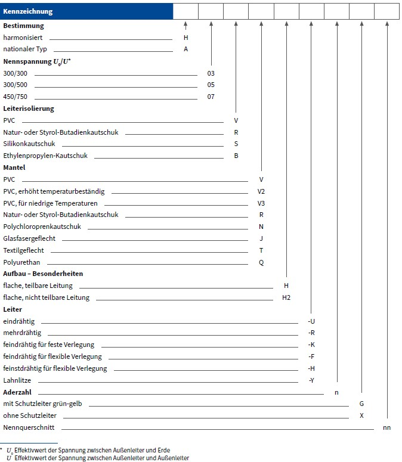

Tabelle 1 Kurzzeichen für harmonisierte Leitungen

Tabelle 2 Beispiele für Leitungsbauarten
| harmonisiert | Leitung | bisher |
| H05V-U H05V-K |
PVC-Verdrahtungsleitung | NYFA NYFAF |
| H07V-U H07V-K |
PVC-Aderleitung | NYA NYAF |
| H03VV-F H03VVH2-F |
leichte Kunststoffschlauchleitung | NYLHY |
| H05VV | mittlere Kunststoffschlauchleitung | NYMHY |
| H05RR-F H05RN-F |
mittlere Gummischlauchleitung | NLH NMH |
| H07RN-F | schwere Gummischlauchleitung | NMHöu |
| H07BQ-F | EPR-isolierte Schlauchleitung mit Polyurethan-Mantel | NGM11YÖ |
| H03VH-Y | leichte Zwillingsleitung | NLYZ |
| H03VH-H | Zwillingsleitung | NYZ |
| H03RT-F | Gummiaderschnur | NSA |
| nationale Norm | Leitung | |
| NSSHÖU | schwere Gummischlauchleitung für sehr hohe mechanische Beanspruchung und für ständige Verwendung im Freien |
Tabelle 3 Kabel und Leitungen ohne grün-gelbe Ader
| 2 | Blau | Braun | |||
| 3 | – | Braun | Schwarz | Grau | |
| 3b) | Blau | Braun | Schwarz | ||
| 4 | Blau | Braun | Schwarz | Grau | |
| 5 | Blau | Braun | Schwarz | Grau | Schwarz |
Tabelle 4 Kabel und Leitungen mit grün-gelber Ader
| 3 | Grün-Gelb | Blau | Braun | ||
| 4 | Grün-Gelb | – | Braun | Schwarz | Grau |
| 5 | Grün-Gelb | Blau | Braun | Schwarz | Grau |
| a) | Blanke konzentrische Leiter wie metallene Mäntel, Armierungen und Schirme werden in diesen Tabellen nicht als Leiter betrachtet. Ein konzentrischer Leiter ist durch seine Anordnung gekennzeichnet und braucht nicht durch Farben gekennzeichnet zu werden. |
| b) | Nur für bestimmte Anwendungen |